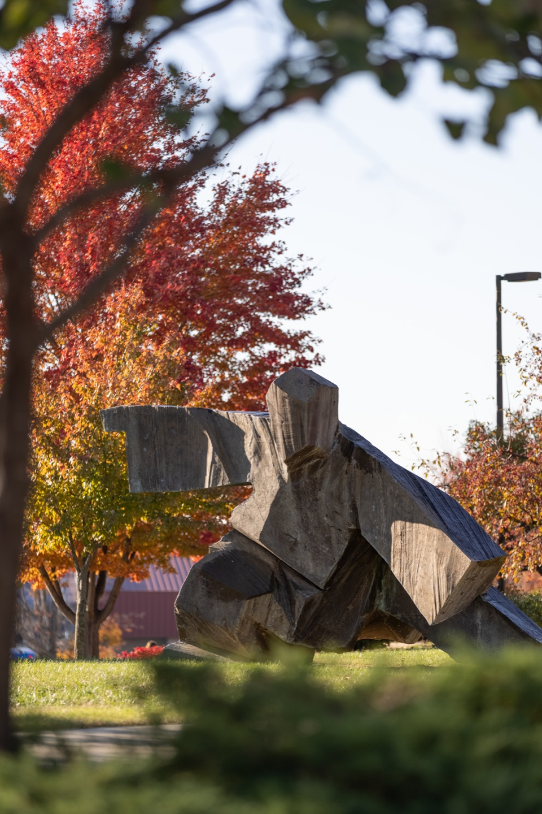

Lei Yu 余磊
PhD student in mathematics · Purdue University
About
I joined Purdue's mathematics PhD program in August 2026.
See my CV (PDF) for more details.
Email: lastname1741@purdue.edu
News
2026
- Nov. 7: Off to KU, Copenhagen, for Lars Hesselholt's 60th birthday conference.
- June 28: Tried to learn some p-adic Langlands. Informal attempts recorded here, in Chinese.
- June 14: Travelled to KIAS, Seoul, for the Categorical Langlands Summit.
- Apr. 12: Started learning Scholze 2020's course on the geometrization of LLC. Some informal attempts recorded here, in Chinese.
- Mar. 6: Tried to learn prismatic cohomology with the help of open resources. Some of my boring attempts are listed here, in Chinese.
2025
- Oct. 23: Left for UMN, Minneapolis, to attend Igor Kriz's 60th birthday conference.
- Sept. 17: Attempted to learn about derived categories of schemes. Some notes can be found here.
- July 14: At CSU, Fort Collins, for the Summer Research Institute in Algebraic Geometry.